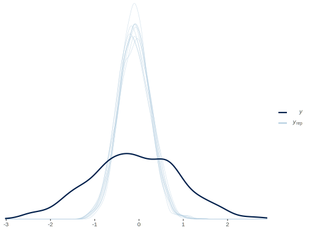
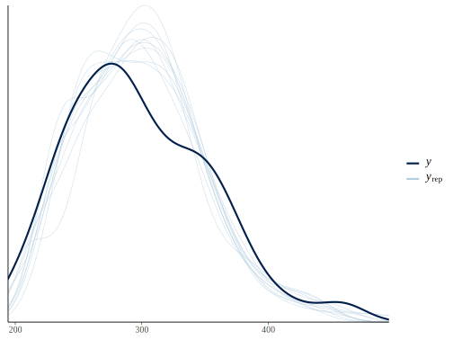

Placeholder
This part is still in progress while I decide what to keep/retain. In the meantime, you can take a look at the old repo.
Bayesian Linear Regression
The following provides a simple working example of a standard regression model using Stan via rstan. It will hopefully to allow some to more easily jump in to using Stan if they are comfortable with R. You would normally just use rstanarm or brms for such a model however.
Data Setup
Create a correlation matrix of one’s choosing assuming response as last column/row.
library(tidyverse)
cormat = matrix(
c(
1, .2, -.1, .3,
.2, 1, .1, .2,
-.1, .1, 1, .1,
.3, .2, .1, 1
),
ncol = 4,
byrow = TRUE
)
cormat [,1] [,2] [,3] [,4]
[1,] 1.0 0.2 -0.1 0.3
[2,] 0.2 1.0 0.1 0.2
[3,] -0.1 0.1 1.0 0.1
[4,] 0.3 0.2 0.1 1.0cormat = Matrix::nearPD(cormat, corr = TRUE)$mat
n = 1000
means = rep(0, ncol(cormat))
d = MASS::mvrnorm(n, means, cormat, empirical = TRUE)
colnames(d) = c('X1', 'X2', 'X3', 'y')
d[,'y'] = d[,'y'] - .1 # unnecessary, just to model a non-zero intercept
str(d) num [1:1000, 1:4] 2.313 0.651 1.932 0.582 0.432 ...
- attr(*, "dimnames")=List of 2
..$ : NULL
..$ : chr [1:4] "X1" "X2" "X3" "y"cor(d) X1 X2 X3 y
X1 1.0 0.2 -0.1 0.3
X2 0.2 1.0 0.1 0.2
X3 -0.1 0.1 1.0 0.1
y 0.3 0.2 0.1 1.0### Prepare for Stan
# create X (add intercept column) and y for vectorized version later
X = cbind(1, d[,1:3]); colnames(X) = c('Intercept', 'X1', 'X2', 'X3')
y = d[,4]Model Code
Initial preparation, create the data list object.
dat = list(
N = n,
k = 4,
y = y,
X = X
)Create the Stan model code.
data { // Data block; declarations only
int<lower = 0> N; // Sample size
int<lower = 0> k; // Dimension of model matrix
matrix [N, k] X; // Model Matrix
vector[N] y; // Target
}
/* transformed data { // Transformed data block; declarations and statements. None needed here.
}
*/
parameters { // Parameters block; declarations only
vector[k] beta; // Coefficient vector
real<lower = 0> sigma; // Error scale
}
transformed parameters { // Transformed parameters block; declarations and statements.
}
model { // Model block; declarations and statements.
vector[N] mu;
mu = X * beta; // Linear predictor
// priors
beta ~ normal(0, 1);
sigma ~ cauchy(0, 1); // With sigma bounded at 0, this is half-cauchy
// likelihood
y ~ normal(mu, sigma);
}
generated quantities { // Generated quantities block; declarations and statements.
real rss;
real totalss;
real R2; // Calculate Rsq as a demonstration
vector[N] y_hat;
y_hat = X * beta;
rss = dot_self(y - y_hat);
totalss = dot_self(y - mean(y));
R2 = 1 - rss/totalss;
}Estimation
Run the model and examine results. The following assumes a character string or file (bayes_linreg) of the previous model code.
library(rstan)
fit = sampling(
bayes_linreg,
data = dat,
thin = 4,
verbose = FALSE
)Note the pars argument in the following. You must specify desired parameters or it will print out everything, including the y_hat, i.e. expected values. Also note that by taking into account the additional uncertainty estimating sigma, you get a shrunken Rsq (see Gelman & Pardoe 2006 sec. 3).
print(
fit,
digits_summary = 3,
pars = c('beta', 'sigma', 'R2'),
probs = c(.025, .5, .975)
)Inference for Stan model: 17507cf73e3a44aeee4c4249d3521a85.
4 chains, each with iter=2000; warmup=1000; thin=4;
post-warmup draws per chain=250, total post-warmup draws=1000.
mean se_mean sd 2.5% 50% 97.5% n_eff Rhat
beta[1] -0.101 0.001 0.031 -0.161 -0.102 -0.037 1001 0.998
beta[2] 0.286 0.001 0.031 0.226 0.285 0.346 971 1.001
beta[3] 0.132 0.001 0.030 0.074 0.133 0.189 1028 1.001
beta[4] 0.114 0.001 0.029 0.056 0.114 0.171 920 1.006
sigma 0.938 0.001 0.020 0.900 0.937 0.981 967 0.999
R2 0.120 0.000 0.002 0.114 0.120 0.123 739 0.999
Samples were drawn using NUTS(diag_e) at Tue Nov 10 14:01:13 2020.
For each parameter, n_eff is a crude measure of effective sample size,
and Rhat is the potential scale reduction factor on split chains (at
convergence, Rhat=1).Comparison
Compare to basic lm result.
modlm = lm(y ~ ., data.frame(d))
# Compare
summary(modlm)
Call:
lm(formula = y ~ ., data = data.frame(d))
Residuals:
Min 1Q Median 3Q Max
-2.85461 -0.63666 0.03136 0.55565 2.94898
Coefficients:
Estimate Std. Error t value Pr(>|t|)
(Intercept) -0.10000 0.02965 -3.372 0.000774 ***
X1 0.28526 0.03051 9.349 < 2e-16 ***
X2 0.13141 0.03051 4.307 1.82e-05 ***
X3 0.11538 0.03004 3.840 0.000131 ***
---
Signif. codes: 0 '***' 0.001 '**' 0.01 '*' 0.05 '.' 0.1 ' ' 1
Residual standard error: 0.9377 on 996 degrees of freedom
Multiple R-squared: 0.1234, Adjusted R-squared: 0.1208
F-statistic: 46.73 on 3 and 996 DF, p-value: < 2.2e-16Visualize
Visualize the posterior predictive distribution.
# shinystan::launch_shinystan(fit) # diagnostic plots
library(bayesplot)
pp_check(
dat$y,
rstan::extract(fit, par = 'y_hat')$y_hat[1:10, ],
fun = 'dens_overlay'
)
Bayesian Mixed Model
Estimate the classic sleepstudy example of lme4. Part of this code was based on that seen on this old Stan thread, but you can look at the underlying code for rstanarm or brms for a fully optimized approach compared to this conceptual one.
Data Setup
The data comes from the lme4 package. It deals with reaction time to some task vs. sleep deprivation over 10 days.
library(tidyverse)
library(lme4)
data(sleepstudy)
# ?sleepstudy
dat = list(
N = nrow(sleepstudy),
I = n_distinct(sleepstudy$Subject),
Subject = as.numeric(sleepstudy$Subject),
Days = sleepstudy$Days,
RT = sleepstudy$Reaction
)Model Code
Create the Stan model code.
data { // data setup
int<lower = 1> N; // sample size
int<lower = 1> I; // number of subjects
vector<lower = 0>[N] RT; // Response: reaction time
vector<lower = 0>[N] Days; // Days in study
int<lower = 1, upper = I> Subject[N]; // Subject
}
transformed data {
real IntBase;
real RTsd;
IntBase = mean(RT); // Intercept starting point
RTsd = sd(RT);
}
parameters {
real Intercept01; // fixed effects
real beta01;
vector<lower = 0>[2] sigma_u; // sd for ints and slopes
real<lower = 0> sigma_y; // residual sd
vector[2] gamma[I]; // individual effects
cholesky_factor_corr[2] Omega_chol; // correlation matrix for random intercepts and slopes (chol decomp)
}
transformed parameters {
vector[I] gammaIntercept; // individual effects (named)
vector[I] gammaDays;
real Intercept;
real beta;
Intercept = IntBase + Intercept01 * RTsd;
beta = beta01 * 10;
for (i in 1:I){
gammaIntercept[i] = gamma[i, 1];
gammaDays[i] = gamma[i, 2];
}
}
model {
matrix[2,2] D;
matrix[2,2] DC;
vector[N] mu; // Linear predictor
vector[2] gamma_mu; // vector of Intercept and beta
D = diag_matrix(sigma_u);
gamma_mu[1] = Intercept;
gamma_mu[2] = beta;
// priors
Intercept01 ~ normal(0, 1); // example of weakly informative priors;
beta01 ~ normal(0, 1); // remove to essentially duplicate lme4 via improper prior
Omega_chol ~ lkj_corr_cholesky(2.0);
sigma_u ~ cauchy(0, 2.5); // prior for RE scale
sigma_y ~ cauchy(0, 2.5); // prior for residual scale
DC = D * Omega_chol;
for (i in 1:I) // loop for Subject random effects
gamma[i] ~ multi_normal_cholesky(gamma_mu, DC);
// likelihood
for (n in 1:N)
mu[n] = gammaIntercept[Subject[n]] + gammaDays[Subject[n]] * Days[n];
RT ~ normal(mu, sigma_y);
}
generated quantities {
matrix[2, 2] Omega; // correlation of RE
vector[N] y_hat;
Omega = tcrossprod(Omega_chol);
for (n in 1:N)
y_hat[n] = gammaIntercept[Subject[n]] + gammaDays[Subject[n]] * Days[n];
}Estimation
Run the model and examine results. The following assumes a character string or file (bayes_mixed) of the previous model code.
library(rstan)
fit = sampling(
bayes_mixed,
data = dat,
thin = 4,
verbose = FALSE
)Comparison
Compare to lme4 result.
print(
fit,
digits_summary = 3,
pars = c('Intercept', 'beta', 'sigma_y', 'sigma_u', 'Omega[1,2]'),
probs = c(.025, .5, .975)
)Inference for Stan model: 82d45c0b016c1733e4bbc33ce7699190.
4 chains, each with iter=2000; warmup=1000; thin=4;
post-warmup draws per chain=250, total post-warmup draws=1000.
mean se_mean sd 2.5% 50% 97.5% n_eff Rhat
Intercept 252.070 0.206 6.596 239.208 252.029 265.202 1024 0.998
beta 10.260 0.049 1.557 7.138 10.301 13.257 1020 1.003
sigma_y 25.906 0.050 1.593 23.037 25.758 29.166 1025 1.002
sigma_u[1] 23.970 0.192 6.184 12.407 23.438 37.623 1036 0.999
sigma_u[2] 6.003 0.045 1.352 3.833 5.857 9.131 890 1.005
Omega[1,2] 0.116 0.009 0.265 -0.374 0.110 0.626 943 1.001
Samples were drawn using NUTS(diag_e) at Tue Nov 10 14:41:51 2020.
For each parameter, n_eff is a crude measure of effective sample size,
and Rhat is the potential scale reduction factor on split chains (at
convergence, Rhat=1).mod_lme = lmer(Reaction ~ Days + (Days | Subject), sleepstudy)
mod_lmeLinear mixed model fit by REML ['lmerMod']
Formula: Reaction ~ Days + (Days | Subject)
Data: sleepstudy
REML criterion at convergence: 1743.628
Random effects:
Groups Name Std.Dev. Corr
Subject (Intercept) 24.741
Days 5.922 0.07
Residual 25.592
Number of obs: 180, groups: Subject, 18
Fixed Effects:
(Intercept) Days
251.41 10.47 cbind(
coef(mod_lme)$Subject,
matrix(get_posterior_mean(fit, par = c('gammaIntercept', 'gammaDays'))[, 'mean-all chains'],
ncol = 2)
) (Intercept) Days 1 2
308 253.6637 19.6662617 254.9401 19.375944
309 211.0064 1.8476053 213.2745 1.574232
310 212.4447 5.0184295 214.7572 4.692619
330 275.0957 5.6529356 272.8280 6.004261
331 273.6654 7.3973743 272.3311 7.680547
332 260.4447 10.1951090 260.1453 10.206502
333 268.2456 10.2436499 267.0088 10.444546
334 244.1725 11.5418676 245.5201 11.319058
335 251.0714 -0.2848792 249.7039 -0.052901
337 286.2956 19.0955511 285.3455 19.191933
349 226.1949 11.6407181 228.6388 11.230074
350 238.3351 17.0815038 240.2908 16.699843
351 255.9830 7.4520239 254.7578 7.642752
352 272.2688 14.0032871 271.5638 14.099152
369 254.6806 11.3395008 254.8691 11.329122
370 225.7921 15.2897709 228.3114 14.818999
371 252.2122 9.4791297 252.2465 9.444850
372 263.7197 11.7513080 262.8522 11.886185Visualize
Visualize the posterior predictive distribution.
# shinystan::launch_shinystan(fit) # diagnostic plots
library(bayesplot)
pp_check(
dat$RT,
rstan::extract(fit, par = 'y_hat')$y_hat[1:10, ],
fun = 'dens_overlay'
)